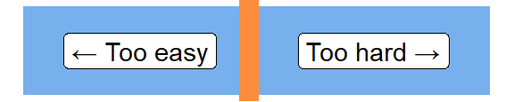
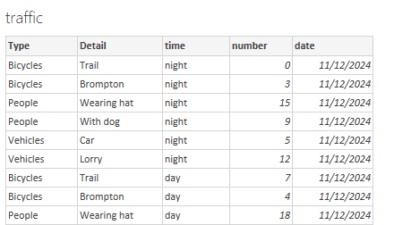

Intermediate Power BI Session 2
Power BI
intermediate
Intermediate Power BI course
DAX
This is part of our intermediate-level Power BI desktop course. The course structure is as follows:
- session 1: a simple build-a-dashboard session as a warmup, reminder about core Power BI techniques, and sharing some suggestions for good workflow practices
- session 2 (this session): DAX language foundations, including FILTER and CALCULATE
- session 3: core PowerQuery functions to manage sources, join data sets, pivot, and tidy values
- session 4: PowerQuery M language foundations, including a basic overview of syntax, a core function toolkit, advanced mode, and reproducibility
- session 5: a second, more ambitious, build-a-dashboard session to put all that PowerQuery and DAX knowledge into practice
Session materials
Previous attendees have said…
- 60 previous attendees have left feedback
- 100% would recommend this session to a colleague
- 97% said that this session was pitched correctly

Three random comments from previous attendees
- Really useful and as a beginner I now have a level of understanding and skill that can be built on
- Very useful and it was particularly interesting seeing/hearing of the different issue users were having because of the differences in the version of Excel/Power Bi they had available to them. My heart goes out to eHealth because it’s incredibly difficult to keep everyone right and happy at the same time.
- I loved this course and would love to attend more. The training has come at a perfect time as I conduct audits for CTAC Aberdeenshire on practice performance over Grampian (our staff work within practices but we as a service have zero visability of tasks undertaken, volumes, filled & unfilled appointments. I want to build a CTAC Aberdeenshire Management Reporting Suite and I have taken big inspiration from the dashboards/reportst that was shown in the first session. All of the training has been completely relevant to what I am doing and with rehashing and practicing each weeks learning, I am so happy to be in a position to get started following this training and I will eagerly await the next course that is available. Brendan, you are an excellent teacher, thank you so much for your time which I have had real value from. Thanks, Nikki Gray2
Session outline
- look at the foundations of DAX
- iterator functions
- filter context
FILTER()CALCULATE()
- variables
- calculation groups
Data
- this session uses a bit of synthetic data extending the Dundee traffic dataset from the previous session 
- please download the data from this link, and import into Power BI
DAX reminders
- functions vs formulas
- arguments and return values
- references
- columns vs measures
Column functions
- Many DAX functions can return either columns or measures
- let’s try a practical example:
Task
- in the
trafficdata, selectNew columnthen add the DAX formulatemp_col = 66 - now repeat with
New measurethentemp_measure = 66 - now add
temp_measureto a card on a new report page
Column vs measure
- your
temp_xxxfunctions will be identical: the value oftemp_measurewill be the same as each row of thetemp_colin your data - the values are the same
- the filter context is also the same
DAX defaults
Task
- now tweak your
temp_colformula to use theUPPERfunction on the[Detail]column:temp = UPPER(traffic[Detail]) - inspect the result
- an important result: DAX column functions default to row-wise filter context
- if you try the same formula in
temp_measureyou’ll cause an error: Power BI won’t know which row you want to change the case of
FILTER()
Task
- now update
temp_col = COUNTROWS(filter(traffic, traffic[number] = 3))
- note that this function now isn’t working row-by-row, but across the entire table
-
FILTER()has changed the default row-by-row context
Filter context
Task
- to illustrate, please build a simple dashboard with:
- a card containing the minimum value of
traffic[temp_col] - a slicer containing
traffic[time]
- a card containing the minimum value of
- note that the value of temp seems to be incorrect - it’s the same no matter how the slicer is set
Iterator functions
Task
- add two new columns:
col_sum = SUM(traffic[number])col_sumx = SUMX(traffic, traffic[number])
- add two new measures
meas_sum = SUM(traffic[number])meas_sumx = SUMX(traffic, traffic[number])
- finally, add all 4 to cards, summarising by
minwhen necessary
What’s the difference?
- in the measure,
SUM()takes the report filter context, and sums for that time of day - in the column,
SUM()calculates the total for an entire column - in both cases,
SUMX()gives the same result, but it calculates it in a different way…
SUMX()
Task
- to illustrate, change both
SUMXcalculations toSUMX(filter(traffic, traffic[number] < 15), traffic[number])
all four values will now disagree: …
col_sumis showing the total for the entire columnmeas_sumis showing the total for the filtered column (sotraffic[time]= morning)col_sumxis showing the total for the filtered column (values oftraffic[number]> 15 only)meas_sumxis showing the total for the doubly-filtered column (values oftraffic[number]> 15 wheretraffic[time]= morning)
SUMX() is an iterator
-
SUMX()calculates row-by-row - in our initial case, it was calculating row-by-row, and then aggregating all the rows
- when we added a filter,
SUMX()included rows meeting the filter condition
ALL()
- strictly,
SUM(x[y])is a sweetened form ofSUMX(ALL(x), x[y]) -
ALL()removes any filter context to include every row of a table
ALL() and CALCULATE()
- much of the power of DAX lies in that ability to alter the filter context. Let’s tweak
meas_sumto show that:
Task
meas_sum = CALCULATE(SUM(traffic[number]), ALL())- compare and contrast col_sum and meas_sum
-
CALCULATE()is a generic function that changes the filter context -
ALL(), as we’ve already seen, removes any filtering from the current filter context
ALLEXCEPT()
-
ALLEXCEPT()allows you to remove part of the filter context
Task
- add an additional slicer to your report slicing on
traffic[Type] - add a new measure with
meas_sum_time = CALCULATE(SUM(traffic[number]), ALLEXCEPT(traffic, traffic[time]))and add to a card
- that should give you a measure that reponds to
time, but not toType - this could be extended - e.g. to
meas_sum_type_time = CALCULATE(SUM(traffic[number]), ALLEXCEPT (traffic, traffic[Type], traffic[time]))
Variables
- DAX formulas get horrid quickly. In this section, we’ll demonstrate the use of variables
- add a new measure:
temp_var =
VAR my_var = 66
RETURN my_varVariable considerations
- useful to avoid repeating yourself
- also useful for avoiding clutter (e.g. component measures)
- local scope - you can’t refer to variables in other expressions
- potentially improve performance
Calculation groups
- calculation groups are a way of applying functions to many measures at once
Task
- in the model view, select
Calculation group - select
Yeswhen warned about implicit measures - that will add a new section to your model
- select
Calculation itemin the Model sidebar - add the formula
round_10 = ROUND(SELECTEDMEASURE(), -1)to the formula bar - back on the report page, add a slicer and populate with your Calculation group